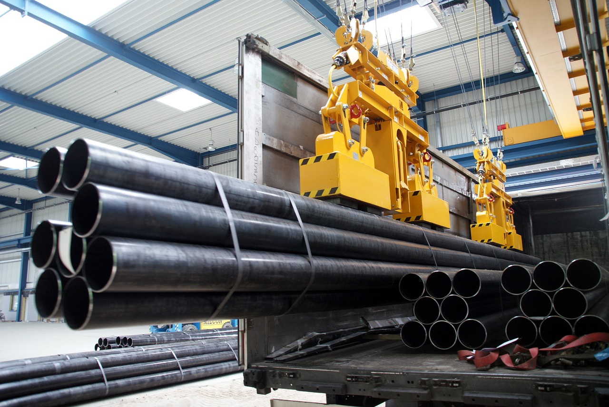

Unit 2-Technology Systems

This unit helps me to understand the components of technology system how they works together as well as understanding how the data flows between internal components of a computer and is processed to provide information. This also helps me to understand the different types of software because technology system is nothing without the software that brings it to life. It also helps me to discover the excitement of creating my own computer programs. | Learning aims in this unit you will:
|
 Please click here to see my work |